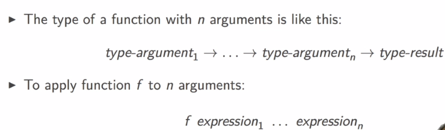
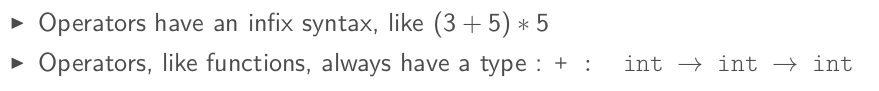
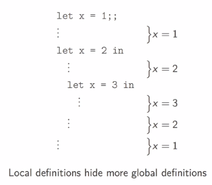
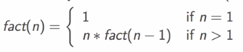
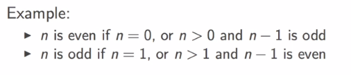

1. BASIC DATA TYPES: int, bool
Rich type system and polymorphism in ocaml. Types are infered not declared.
Basic types: int, bool, float, string, char, ...
int
value: \(-2^{62}\) ~ \(2^{62}-1\) on 64-bit machines.
ops: +, -, *, /, mod (reminder: / is integer division)
# 3+2*4-1;;
- : int = 10
# 5/2;;
- : int = 2
# -5 mod 3;;
- : int = -2
bool
values: true, false
ops: &&,||, not
comparison ops: <, >, =, <=, =>, <>
note 1: comparisons must have the same type of operands)
note 2: equal test is = , = is NOT assigment. == exists but is for something else...
# true && (1<7);;
- : bool = true
# 1.0 < 7;;
Error: This expression has type int but an expression was expected of type
float
# 5 > "hello";;
Error: This expression has type string but an expression was expected of type
int
# 3=3;;
- : bool = true
# 3==3;;
- : bool = true
# 3<3.0;;
Error: This expression has type float but an expression was expected of type
int
# 3.0 < 3.0;;
- : bool = false
2. MORE DATA TYPES: float, char, string
float
value: must written with a dot (5.0, 5.), or exponential (5e3, 6e-9)
ops: also have a dot in the end +., -., *., /.
functions: sqrt, sin, cos, ceil, floor, ...
# 3.0 +. 1e10;;
- : float = 10000000003.
# 2 + 3.0;;
Error: This expression has type float but an expression was expected of type
int
# 3. +. 2.0;;
- : float = 5.
All basic types are disjoint: no value belongs to 2 different basic types, no implicit conversion.
conversion functions in both directions:
float_of_int: int -> floatint_of_float: float -> int
# float_of_int(2);;
- : float = 2.
# int_of_float(2.4);;
- : int = 2
# float_of_int 2;;
- : float = 2.
# int_of_float 2.8;;
- : int = 2
Parentheses only necessary to indicate structure.
char
values: 256 chars (0~255), can be written as 'a' or '\087'
conversion functions (char ↔ int):
Char.chr: int ->charChar.code: char -> int
# Char.code 'A';;
- : int = 65
# Char.code '\122';;
- : int = 122
# Char.chr 233;;
- : char = '\233'
# Char.chr 65;;
- : char = 'A'
# Char.chr (Char.code 'B');;
- : char = 'B'
string
values: written between ""
ops: ^ for string concatenation
functions: String.length, int_of_string, float_of_string, String.get(s,i) ...
# "abc" ^ "def";;
- : string = "abcdef"
# String.length "1234";;
- : int = 4
# int_of_string "123";;
- : int = 123
# int_of_string "123a";;
Exception: Failure "int_of_string".
# string_of_int 123;;
- : string = "123"
# String.get "abc" 1;;
- : char = 'b'
3. EXPRESSIONS: if-then-else, func-applications and operators
expressions are used to compute values.
conditional expr
if... then... else...
⇒ this gives an expression, not an instruction.
An expression always have a type, type of the if-then-else expression is the type of the expressions in then and else, which must be the same.
If the else is missing → there is a default value, to be discussed later
# if 1<2 then 8 else 9;;
- : int = 8
# if 6=8 then 1 else 8;;
- : int = 8
# if 6=8 then 1 else 8.;;
Error: This expression has type float but an expression was expected of type
int
# if(if 1=1 then 2=2 else 3>2) then 2<3 else 3<2;;
- : bool = true
function application

again, () are not needed unless indicate structure, and parentheses are NOT function applications...
# String.get;;
- : string -> int -> char = <fun>
# String.get "abcde" 2;;
- : char = 'c'
# String.get ("Hello"^"world") (3+2);;
- : char = 'w'
# String.get (string_of_int 65) (int_of_string "0");;
- : char = '6'
# String.get("hello", 2);;
Error: This expression has type 'a * 'b
but an expression was expected of type string
Polymorphic operators

Some ops have polymorphic(generic) types, like >: 'a → 'a → bool
Here the 'a is a type variable, can be instantiated by any type.
# 12 > 23.0;;
Error: This expression has type float but an expression was expected of type
int
# 'a' > 'b';;
- : bool = false
# "hello" > "world";;
- : bool = false
4. DEFINITIONS
definitions are used to give names to values, in ocaml there are global defs and local defs.
global definition
effective for rest of session
syntax: let name = expr
once set, the value of the identifier never changes.
# let x = 2+3;;
val x : int = 5
# let y = 2*x;;
val y : int = 10
# let x = 3;; # **the old definition of x will be shadowed**
val x : int = 3
# x = x+1;;
- : bool = false
local definition
naming within a delimited scope
syntax: let name = expr1 in expr2
the scope of the identifier is expr2, the result's value is also expr2's value. So the identifier should appear in expr2.
# let x = 9 in 2*x;;
- : int = 18
# x;; # x is not in global scope
Error: Unbound value x
# let y = x+1 in y/3;;
Error: Unbound value x
# let x = 17;; # now x is global
val x : int = 17
# let y = x+1 in y/3;;
- : int = 6
local defs can be nested:
# let x = 4 in
let y = x+1 in
let x = 2*y in x;;
Error: Syntax error
# let x = 4 in
let y = x+1 in
let x=2*y in x;;
- : int = 10
# let x = 4 in
(let x=17 in x+1) + x;;
- : int = 22

Simultaneous Definitions
can assign 2 identifiers in the same line:
# let x1=2 and x2=3-3;;
val x1 : int = 2
val x2 : int = 0
Note: expr is evaluated w.r.t. the value bindings before the let.
# let x=2 in
let y=x+1 in (*y=2+1*)
x*y;;
- : int = 6
# let x=1;;
val x : int = 1
# let x=2 and y=x+1 in (*y=1+1 because the binding for x before the let is 1!*)
x*y;;
- : int = 4
5. FUNCTIONS
func definition
global function (with 1 argument) def : let f x = expr
local def: let f x = expr1 in expr2
# let f x = x+1;;
val f : int -> int = <fun>
# f 17;;
- : int = 18
# let g y = 2*y
in g 42;;
- : int = 84
# f f 1;; (* interpreted as apply 2 argments to f, need parentheses here*)
Error: This function has type int -> int
It is applied to too many arguments; maybe you forgot a `;'.
# f (f 1);;
- : int = 3
lexical scoping
def. lexical scoping identifiers(names) used in function body refers to the names that are visible at the moment of function definition.
def. dynamic scoping names refer to names that are visible at the moment of function invocation.
# let f x = x+1 in
let g y = f (f y) in (*here f is the f defined above, which is visible at the moment of g's declaration*)
let f x = 2*2 in (*this f is visible after g's declaration, it is visible when g is invocated*)
g 5;; (*g uses the first f*)
Warning 26: unused variable f.
- : int = 7
(*the same is true for global scoping*)
# let f x = x+1;;
val f : int -> int = <fun>
# let g y = f (f y);;
val g : int -> int = <fun>
# let f x = 2*x;;
val f : int -> int = <fun>
# g 5;;
- : int = 7
identifiers are NOT variables
A name(identifier) can be hidden (the value is NOT changed) by a new definition of the same name.
The hidden identifier can be accessed with static(lexical) binding:
# let a = 1;;
val a : int = 1
# let f x = x+a;;
val f : int -> int = <fun>
# f 2 ;;
- : int = 3
# let a = 73;;
val a : int = 73
# f 2;; (*f still uses a's value as 2, the old value of a is NOT changed, it's hidden --closure? *)
- : int = 3
6. RECURSION
rec functions are natural on recursively defined data structures.
example: fact(n)

recursive definition
using the f in let's expr will cause pb as f refers to the previous value of f. ⇒ use key word rec.
# let fact n = if n<=1 then 1 else n*fact(n-1);;
Error: Unbound value fact
# let rec fact n = if n<=1 then 1 else n*fact(n-1);;
val fact : int -> int = <fun>
# fact 10;;
- : int = 3628800
mutually recursive function
ex. 2 funcs calling each other recursively

⇒ use simultaneous defs (let...and...):
# let rec even x = if x=0 then true else odd(x-1)
and odd x = if x=0 then false else even(x-1);;
val even : int -> bool = <fun>
val odd : int -> bool = <fun>
# even 17;;
- : bool = false
# odd 10;;
- : bool = false
exercices
let multiple_of n d =
(n mod d) == 0;;
let integer_square_root n =
let sqr = sqrt (float_of_int n) in
int_of_float sqr;
let rec gcd n m =
let big = max n m and small = min n m in
let r = big mod small in
if r=0 then small
else gcd r small;;
let rec multiple_upto n r =
if r<2 then false
else if multiple_of n r then true
else multiple_upto n (r-1);;
let is_prime n =
if n<=1 then false
else not (multiple_upto n (n-1));;
Part 2 of series «Introduction to Functional Programming in OCaml»：
- [OCaml MOOC] week0: intro and overview
- [OCaml MOOC] week1: BASIC TYPES, DEFINITIONS AND FUNCTIONS
- [OCaml MOOC] week2: BASIC DATA STRUCTURES
- [OCaml MOOC] week3: MORE ADVANCED DATA STRUCTURES
- [OCaml MOOC] week4: HIGHER ORDER FUNCTIONS
- [OCaml MOOC] week5: EXCEPTIONS, INPUT OUTPUT AND IMPERATIVE CONSTRUCTS
- [OCaml MOOC] week6: MODULES AND DATA ABSTRACTION
Disqus 留言